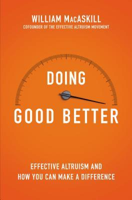

Doing Good Better: How Effective Altruism Can Help You Make a Difference
William MacAskill
My rating: 4.25/5
This book is about evaluating altruistic actions quantitatively and presents a number of interesting cases where widely-popular well-meaning efforts fell short. It also discusses simplistic frameworks to gauge effectiveness of actions and warns against being emotionally connected to causes.
While the book doggedly mentions ‘doing the most good’ and discourages emotional attachment, I think altruism is non-existent without emotions and cannot be discussed without that context. Doing good itself doesn’t make any strategic sense from a truly quantitative and unemotional point of view. For example, if you’ve an extra buck, it can be used to promote one’s own survival even if by a small margin and that is the smartest way to use it, strategically speaking. In my opinion, the feeling of satisfaction and attachment is just as important since that is what drives most people, as the desire to do good stands empty without the motivation to do so
Secondly, the argument about donating to only the most effective charities and the QALY analysis is not entirely perfect. For example when the author compares Books for Africa and the Against Malaria Foundation, he dismisses the case of the former due to lack of data on QALY. This brings to mind the debate about why the Indian government should stop spending on space exploration or defense when millions are living in poverty. Development does not need to be sequential.